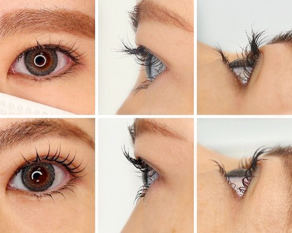

ロッド不安ゼロ！
ロッド攻略デザインセミナー
ロッド不安ゼロ！
ロッド攻略デザインセミナー
RECOMMENDEDこんな方におすすめ
COURSE BENEFITSコースの詳細


ロッド迷子を卒業、100通りの選択肢を、たった1つの正解へ


曖昧なカウンセリングを論理的なロッド選定に変換。


まぶたを「見る」だけで、使うべきロッドが自動的に決まる


「上がらなかったらどうしよう」という不安が、確信に変わる


根元 1mmの立ち上がりにこだわる、本当の巻き上げ術

少人数制「小さな疑問」も、その場ですぐに解消
CURRICULUMコース内容
￥35,200
¥28,600

※画像はサンプルです
FAQ
Q.ベーシックを受けましたが、アドバンスを受けたほうがいいですか？
Q.ベーシックコースを受けないとできませんか？
Q.どのようなデザインを学べますか？